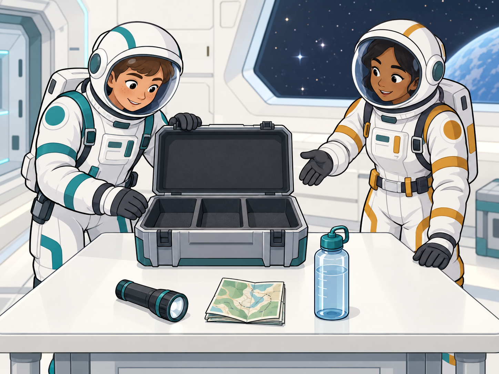

YEAR 8 · THEORY · 60 MINUTES
One crew. A changing mission. Learn to organise equipment with lists, find an item and replace it when plans change.

YOUR MISSION STARTS HERE
Choose support now. You can change it on any learning card. Python code stays the same.
Six core practices, then a bank of harder missions. Your language choice never limits your challenges. Change support at any time.
Your name, class, answers, code drafts, runs, hints and evidence are saved to the school’s Supabase database for your teacher. Typing is grouped after short pauses; other apps/tabs are not recorded. A copy stays on this device while offline. Check the School save status before leaving.
老师可以查看本课的答案、代码和学习记录。离线时先保存在本设备。선생님이 이 수업의 답, 코드와 학습 기록을 볼 수 있습니다. 오프라인에서는 이 기기에 먼저 저장됩니다.
Export a backup before changing devices. A name identifies your work; it is not a verified student login. Never enter passwords or other private information in a lesson answer.
Your work stays in this browser. A backup contains your identity, answers, code, attempts and any evidence image.
Keep this browser and its stored data until pending changes have synced. A downloaded backup contains your work, not the private database write key. On a new device, restored work starts a separate learning trace under your name.
Preview mode does not unlock pupil data. Sign in with the existing approved teacher Supabase account. Credentials and login tokens are not included in pupil tracking or stored persistently by this page.
SAVE → CHECK → TURN IN
This is your own confirmation. The app cannot check Teams.